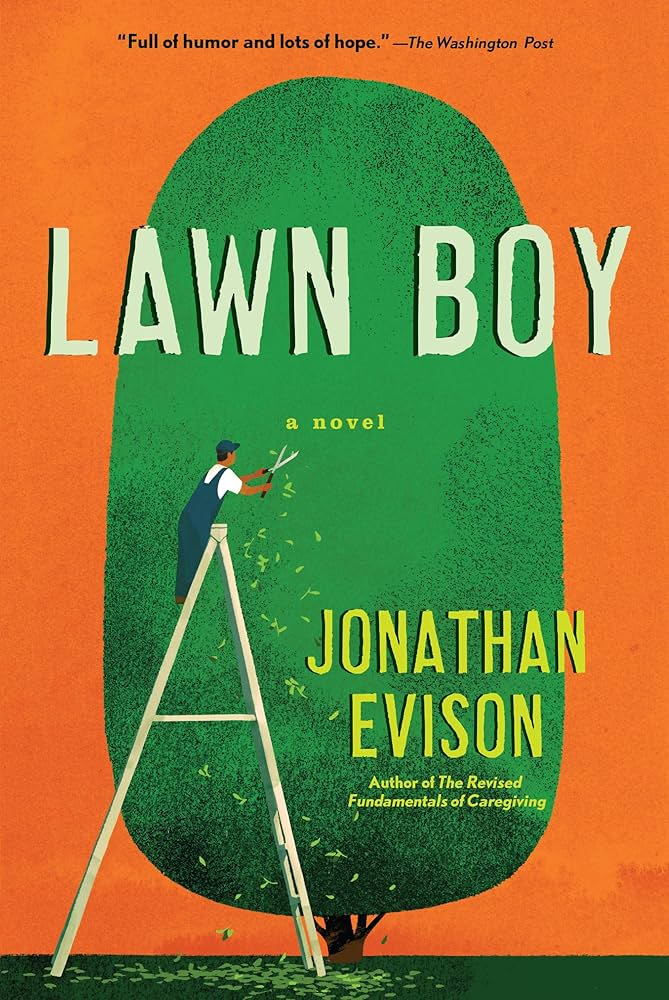
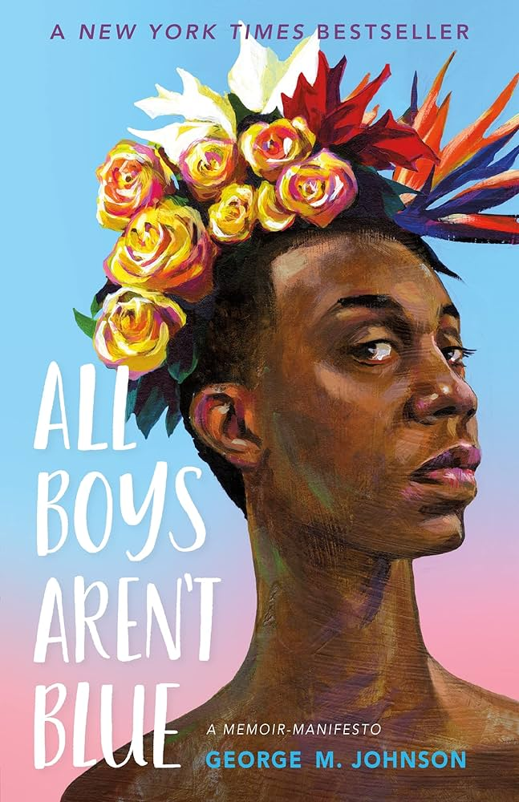
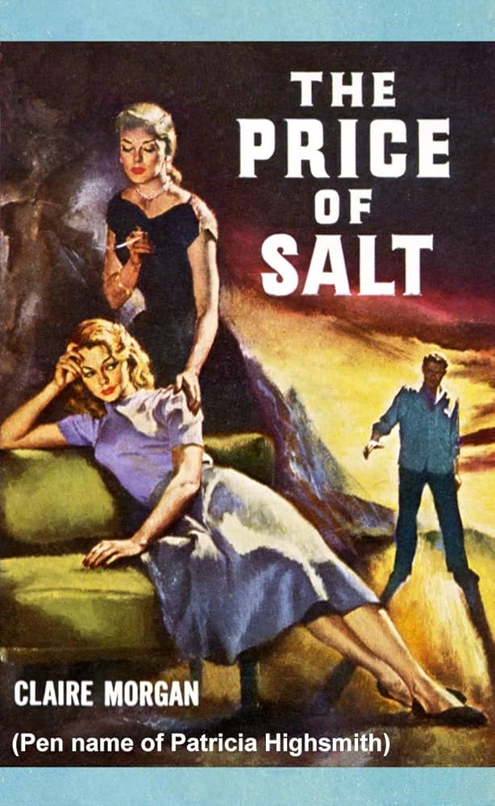
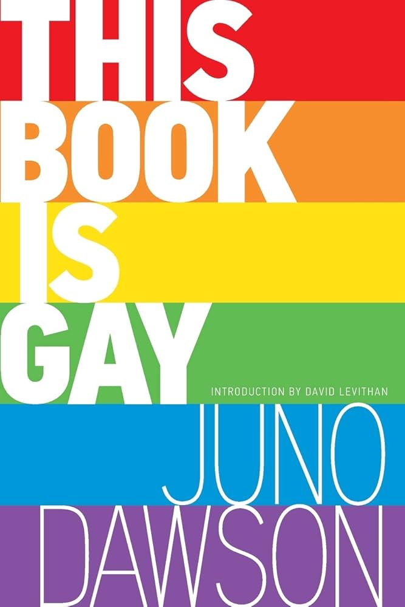
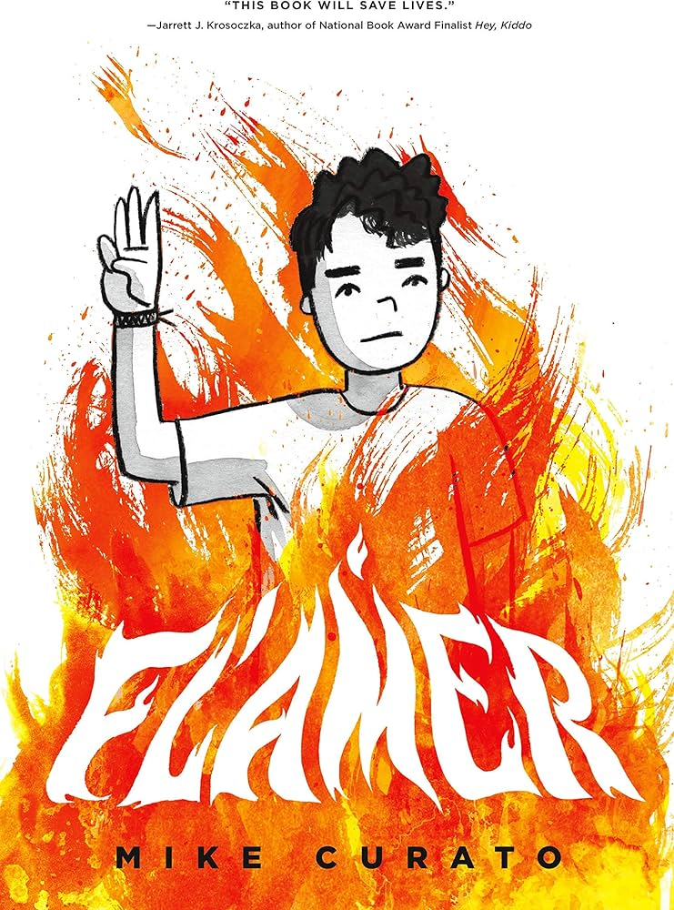
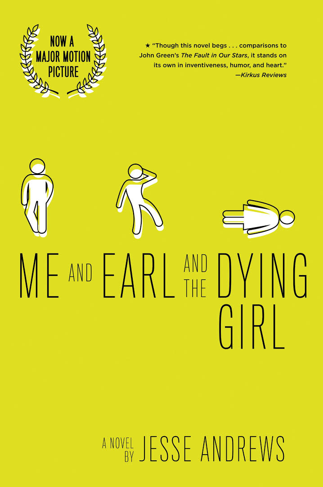

About
Classic Literature
Contemporary Literature
Children's Books
LGBTQ+ Themes
Race & Identity
Resources
Banned LGBTQ+ Literature
Even works now considered essential to world literature have faced censorship throughout history. These books challenged prevailing norms, addressed controversial topics, or used language deemed inappropriate for their time. Click on each book to read the full text on Project Gutenberg.






1. Wikimedia Foundation. (2025, March 29). Lawn boy (Evison novel). Wikipedia. https://en.wikipedia.org/wiki/Lawn_Boy_(Evison_novel)
2. Wikimedia Foundation. (2025b, November 17). All boys aren’t blue. Wikipedia. https://en.wikipedia.org/wiki/All_Boys_Aren’t_Blue
3. Morgan, Claire. (1970, January 1). Abebooks. by MORGAN, CLAIRE.: (1953) First edition., Signed by Author(s) | BUCKINGHAM BOOKS, ABAA, ILAB, IOBA. https://www.abebooks.com/signed-first-edition/PRICE-SALT-MORGAN-CLAIRE-Bantam-Books/31480411576/bd
4. Wikimedia Foundation. (2025b, October 22). This book is gay. Wikipedia. https://en.wikipedia.org/wiki/This_Book_Is_Gay
5. Wikimedia Foundation. (2025c, November 16). Flamer (novel). Wikipedia. https://en.wikipedia.org/wiki/Flamer_(novel)
6. Amazon.com: Me and Earl and the dying girl: 9781419719608: Andrews, jesse: Books. (n.d.-a). https://www.amazon.com/Me-Earl-Dying-Girl-Revised/dp/1419719602